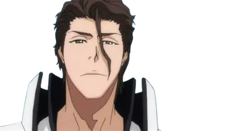

Les Créateurs
Adam Sehili - Développeur principal

Berkay - Designer et créateur visuel
Contributions importantes
Bastien - Envoi de cours et PDFs pour soutenir le projet.
Anis Saidi - Financement du projet.
Les professeurs de biotechnologie - Inspiration principale.